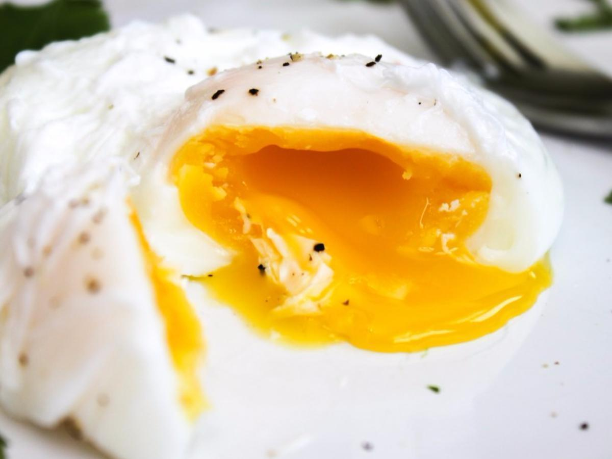

Description
A poached egg is an egg that has been cooked, outside the shell, by poaching, as opposed to simmering or boiling. This method of preparation can yield more delicately cooked eggs than cooking at higher temperatures such as with boiling water.
5 mins to prep / 10 mins to cook
Ingredients
- Egg: 2 large
- Vinegar: 1 tsp
- Salt: 3/4 tsp
Steps
- Add a small dash of vinegar and salt to a pan of steadily simmering water.
- Crack eggs individually into a small cup.
- Create a gentle whirlpool in the water to help the egg white wrap around the yolk.
- Slowly tip the egg into the water, white first. Leave to cook for three minutes.
- Remove with a slotted spoon, cutting off any wispy edges using the edge of the spoon.